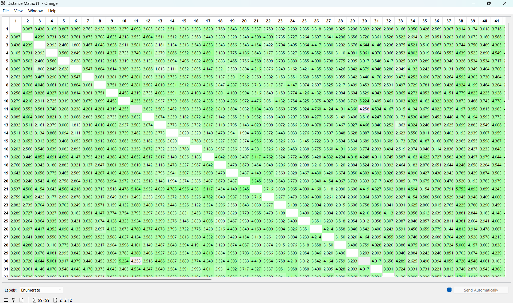

Pengukuran Jarak Data Campuran dengan Euclidean Distance#
Metode yang digunakan untuk mengukur jarak pada dataset dengan tipe data campuran (numerik dan kategorikal) dalam analisis ini adalah Euclidean Distance. Untuk mengakomodasi data campuran, data melalui tahap pra-pemrosesan: atribut numerik dinormalisasi, dan atribut kategorikal diubah menjadi representasi numerik (misalnya melalui One-Hot Encoding).
1. Pengelompokan Atribut#
Berdasarkan dataset StudentPerformanceFactors.csv, atribut dikelompokkan menjadi dua jenis:
Atribut Numerik (7):
Hours_Studied,Attendance,Sleep_Hours,Previous_Scores,Tutoring_Sessions,Physical_Activity, danExam_Score.Atribut Kategorikal (13):
Parental_Involvement,Access_to_Resources,Extracurricular_Activities,Motivation_Level,Internet_Access,Family_Income,Teacher_Quality,School_Type,Peer_Influence,Learning_Disabilities,Parental_Education_Level,Distance_from_Home, danGender.
2. Normalisasi dan Transformasi Data#
Sebelum menghitung jarak Euclidean, data harus distandarisasi agar atribut dengan skala besar tidak mendominasi perhitungan:
Atribut Numerik: Dinormalisasi menggunakan Min-Max Scaler agar berada di rentang 0 hingga 1. Rumus Normalisasi Min-Max: $\(X_{norm} = \frac{X - X_{min}}{X_{max} - X_{min}}\)$
Atribut Kategorikal: Dikonversi menjadi nilai numerik biner (0 dan 1) agar dapat dihitung secara matematis oleh algoritma Euclidean.
3. Pengukuran Jarak (Euclidean Distance)#
Setelah seluruh data berada dalam bentuk numerik yang setara, jarak antar baris data (profil siswa) dihitung menggunakan rumus Euclidean.
Rumus Euclidean Distance: $\(d(x,y) = \sqrt{\sum_{i=1}^{n} (x_i - y_i)^2}\)$
Di mana \(x_i\) dan \(y_i\) adalah nilai atribut ke-\(i\) dari dua siswa yang sedang dibandingkan, dan \(n\) adalah total jumlah atribut setelah transformasi.
Matriks Jarak (Sampel 5 Data Pertama)#
Berdasarkan perhitungan, berikut adalah sampel jarak untuk 5 siswa pertama. Semakin kecil nilainya (mendekati 0), maka profil kombinasi akademik dan latar belakang siswa tersebut semakin mirip.
Siswa 1 |
Siswa 2 |
Siswa 3 |
Siswa 4 |
Siswa 5 |
|
|---|---|---|---|---|---|
Siswa 1 |
0.000 |
3.387 |
3.438 |
3.105 |
3.807 |
Siswa 2 |
3.387 |
0.000 |
4.239 |
3.731 |
3.503 |
Siswa 3 |
3.438 |
4.239 |
0.000 |
2.392 |
2.460 |
Siswa 4 |
3.105 |
3.731 |
2.392 |
0.000 |
3.580 |
Siswa 5 |
3.807 |
3.503 |
2.460 |
3.580 |
0.000 |
Interpretasi Hasil#
Paling Mirip: Siswa 3 dan Siswa 4 memiliki jarak terendah (\(2.392\)) di dalam sampel ini. Ini berarti secara keseluruhan (jam belajar, nilai, latar belakang keluarga, dll), karakteristik mereka paling identik.
Paling Berbeda: Siswa 2 dan Siswa 3 memiliki jarak paling besar (\(4.239\)), menandakan perbedaan profil yang cukup signifikan di antara keduanya.
Catatan: Nilai jarak yang dihasilkan lebih dari 1 karena Euclidean Distance mengakumulasikan total selisih kuadrat dari puluhan atribut (termasuk pecahan dari kolom kategorikal), bukan merata-ratakannya.
Hasil Perhitungan Jarak (Student Performance):

3. Implementasi Kode (Python)#
Berikut adalah implementasi perhitungan jarak menggunakan bahasa pemrograman Python. Proses ini meniru cara kerja software data mining dalam melakukan pra-pemrosesan dan ekstraksi jarak Euclidean.
Matriks Jarak Euclidean (Sampel 5x5):
---------------------------------------------
Siswa 1 Siswa 2 Siswa 3 Siswa 4 Siswa 5
Siswa 1 0.000 3.550 3.806 3.526 4.304
Siswa 2 3.550 0.000 3.911 3.040 3.565
Siswa 3 3.806 3.911 0.000 2.860 2.531
Siswa 4 3.526 3.040 2.860 0.000 3.585
Siswa 5 4.304 3.565 2.531 3.585 0.000
Pengukuran Jarak Data Numerik (Studi Kasus: Dataset Iris)#
Berbeda dengan dataset campuran yang membutuhkan perlakuan khusus, dataset yang seluruhnya berisi angka (Pure Numeric) sangat menyenangkan untuk dihitung. Contoh klasiknya adalah dataset Iris, yang mengukur karakteristik fisik bunga (panjang dan lebar kelopak).
Karena semua ukurannya adalah angka kontinu (dalam sentimeter), kita bisa menggunakan penggaris virtual bernama Euclidean Distance (Jarak Garis Lurus).
1. Rumus Euclidean Distance (Sangat Sederhana!)#
Bayangkan kamu sedang menarik garis lurus dari Titik A ke Titik B di atas kertas. Euclidean Distance bekerja dengan cara mencari selisih masing-masing ukuran, mengkuadratkannya agar tidak ada nilai minus, menjumlahkannya, lalu diakar-kuadratkan.
Mari kita bedah artinya:
\(d(x,y)\) : Jarak antara Bunga \(x\) dan Bunga \(y\).
\((x_i - y_i)\) : Selisih ukuran fitur ke-\(i\) (misal: panjang sepal bunga \(x\) dikurangi panjang sepal bunga \(y\)).
Pangkat Dua \((...)^2\) : Agar hasil selisihnya selalu positif.
Simbol Akar \(\sqrt{...}\) : Mengembalikan angka ke ukuran aslinya setelah dikuadratkan.
2. Praktik Step-by-Step Mencari Missing Value!#
Mari kita ambil 5 baris pertama dari dataset IRIS.csv. Kita akan sengaja “menghapus” nilai lebar kelopak bagian dalam (petal_width) pada Bunga D dan menjadikannya misteri yang harus kita tebak.
Data Bunga |
Sepal Length |
Sepal Width |
Petal Length |
Petal Width |
|---|---|---|---|---|
Bunga A |
5.1 |
3.5 |
1.4 |
0.2 |
Bunga B |
4.9 |
3.0 |
1.4 |
0.2 |
Bunga C |
4.7 |
3.2 |
1.3 |
0.2 |
Bunga D |
4.6 |
3.1 |
1.5 |
? (Kosong) |
Bunga E |
5.0 |
3.6 |
1.4 |
0.2 |
Karena petal_width pada Bunga D kosong, kita akan mengukur kemiripan bunga berdasarkan 3 fitur pertama saja: Sepal Length, Sepal Width, dan Petal Length.
Langkah Perhitungan Jarak dari Bunga D ke Teman-temannya:#
Pertandingan 1: Bunga D vs Bunga A
Beda Sepal Length = \((4.6 - 5.1)^2 = (-0.5)^2 = 0.25\)
Beda Sepal Width = \((3.1 - 3.5)^2 = (-0.4)^2 = 0.16\)
Beda Petal Length = \((1.5 - 1.4)^2 = (0.1)^2 = 0.01\)
Total Jarak D ke A = \(\sqrt{0.25 + 0.16 + 0.01} = \sqrt{0.42} = \mathbf{0.648}\)
Pertandingan 2: Bunga D vs Bunga B
Beda Sepal Length = \((4.6 - 4.9)^2 = (-0.3)^2 = 0.09\)
Beda Sepal Width = \((3.1 - 3.0)^2 = (0.1)^2 = 0.01\)
Beda Petal Length = \((1.5 - 1.4)^2 = (0.1)^2 = 0.01\)
Total Jarak D ke B = \(\sqrt{0.09 + 0.01 + 0.01} = \sqrt{0.11} = \mathbf{0.332}\)
Pertandingan 3: Bunga D vs Bunga C
Beda Sepal Length = \((4.6 - 4.7)^2 = (-0.1)^2 = 0.01\)
Beda Sepal Width = \((3.1 - 3.2)^2 = (-0.1)^2 = 0.01\)
Beda Petal Length = \((1.5 - 1.3)^2 = (0.2)^2 = 0.04\)
Total Jarak D ke C = \(\sqrt{0.01 + 0.01 + 0.04} = \sqrt{0.06} = \mathbf{0.245}\)
Pertandingan 4: Bunga D vs Bunga E
Beda Sepal Length = \((4.6 - 5.0)^2 = (-0.4)^2 = 0.16\)
Beda Sepal Width = \((3.1 - 3.6)^2 = (-0.5)^2 = 0.25\)
Beda Petal Length = \((1.5 - 1.4)^2 = (0.1)^2 = 0.01\)
Total Jarak D ke E = \(\sqrt{0.16 + 0.25 + 0.01} = \sqrt{0.42} = \mathbf{0.648}\)
3. Kesimpulan: Mengisi Nilai Bunga D!#
Mari kita bandingkan kedekatan ukurannya:
Jarak ke Bunga A: \(0.648\)
Jarak ke Bunga B: \(0.332\)
Jarak ke Bunga C: 0.245 (Paling Kecil!)
Jarak ke Bunga E: \(0.648\)
Dari hasil matematika di atas, bentuk fisik Bunga C adalah yang ukurannya paling identik dan dekat dengan Bunga D.
Jadi, untuk mengatasi data (petal_width) yang hilang pada Bunga D, kita tinggal meminjam nilai dari tetangga terdekatnya. Karena petal_width milik Bunga C adalah 0.2, maka kita mengisi nilai misteri Bunga D dengan prediksi 0.2!
(Kamu bisa memeriksa file CSV aslinya, dan lihatlah di baris keempat, nilai Petal Width yang sebenarnya untuk Bunga D memang benar-benar 0.2. Prediksi menggunakan Euclidean Distance bekerja dengan sempurna!)